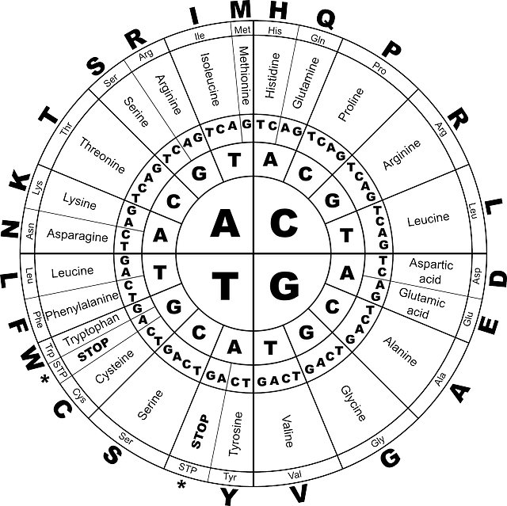
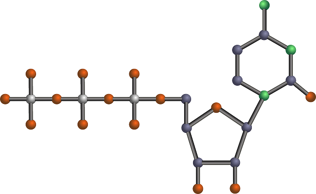

Hi, my name is Lars Berg. One of the things I love and one of the most quirky things about me is that I love to learn about Telomeres. Telomeres are fascinating. One reason that our bodies start to age is the shortening of our telomeres.

DNA and Immortality
Elizabeth Blackburn discovered if you inject Telomerase into some cells those cells become immortal.
Longevity
The oldest person who ever lived was Jeanne Calment who lived till 122 years old. Is it possible that her telomeres started out longer than a normal human being?
DNA and You
Will we figure it out in our lifetime? Is it diet or genetics or a combination of both that cause one persons body to age quicker than anothers? What's the secret to our DNA is it just a code that we can understand and program or is there more to it that we don't yet understand.
The adventure of the Telomeres
Call me to discuss your theories: 1-917-710-5043
Email me: larsgbr@gmail.com
Everyday you should learn something new.


© 2014 The secrets are there waiting for you to find them.